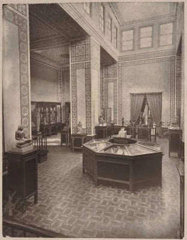
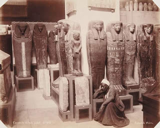
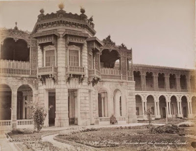
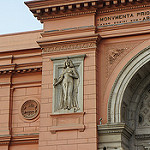
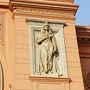
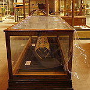
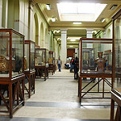
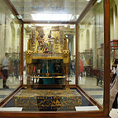
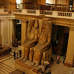
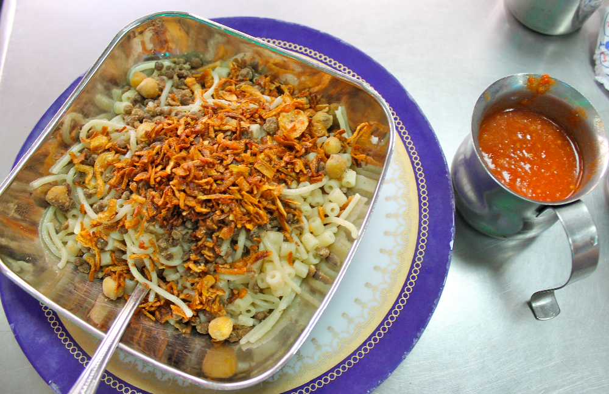

Cairo Musuem
In December , the Egyptian Museum in Cairo administration announced that it was allowing for the first time photography for free in the Museum.
It was a great opportunity for all photographers in Egypt to go and explore the world's biggest museum of Egyptian antiquities.
I went several times to the Egyptian Museum because it is too big including one time with my family and we took fantastic photos.
The first time I had visited the Egyptian Museum was from long time ago when I was a little boy already.
facts about the Egyptian Museum in Cairo
-
The actual name of the museum is The Museum of Egyptian Antiquities.
It is also called the symbol of faith for the Egyptians.
The building was built in the year 1900 by a French architect named Marcel Dourgnon.
A hall for the royal mummies is also found in the museum which houses eleven kings and queens.
The museum collection exceeds 120 000 objects which range from the historic era to the Greco-Roman period.
More than 1.5 million tourists visit the museum per year and this is in addition to the 500 000 Egyptians who visit it per year.
Entrance of the Musuem

A little Egyptian Museum History : The First Museum dedicated to Egyptian antiquities in Egypt was founded in 1835 during the rule of Mohamed Ali Pasha and it was near the Ezbekeyah gardens "Downtown Cairo" in Cairo. Later that museum was moved to the Citadel. In 1855 , Khedive Saeed decided to give the whole collection of that Museum to the Austrian Emperor of Mexico "yes, you read it right" Maximilian I. That can give you a glimpse how Saeed Pasha looked to Egyptian heritage. Already, Saeed sent Egyptian troops to fight with the French against the Mexican revolution during then. Now that collection of that first museum is at Kunsthistorisches Museum in Vienna, Austria. In 1858 , during the rule of Khedive Ismail , the founder of Modern Cairo and under the supervision of French Egyptologist Auguste Mariette , the true first Egyptian Museum dedicated to ancient Egyptian antiquities was inaugurated on the banks of the Nile in Boulaq area, Cairo. Now here are very rare photos for the Boulaq Museum.



Unfortunately, it was not the perfect spot to build a museum or any building actually as in 1878 , the museum was drowned in one of those strong destructive Nile River floods that used to erase villages. Some antiquities drowned and some not.
The remaining antiquities were then moved to One of Khedive's Palaces in Giza aka Giza Palace in 1891 under the supervision of French Egyptologist Gaston Maspero temporarily .
I am still wondering how that Museum which used to have millions of pounds as revenues during the good old days of tourism was neglected like that.
I do not understand why the Egyptian ministry of antiquities do not ask Egyptian and international companies to sponsor the Museum.
Why not ask companies like Samsung or Philips or Sony to give visual and audio equipment for better interactive display.
Jotan can provide new paint for the whole Museum in return a worldwide publicity.
I stumbled online while browsing the Official Facebook page of the Egyptian Museum by accident that there is project to Revive the Egyptian Museum since 2012 and it seems that it stumbled or rather moving slowly due to Egyptian political changes.
Currently , the Tutankhamun' sector in the second floor is being renovated gradually by a German grant.
The renovation will restore the original colors and design of the Museum when it was inaugurated in 1902.


The museum itself was pretty strange – it barely seemed curated, and felt more like a storage house full of ancient treasures than a museum. Then again, if you’re housing artifacts that are five thousand years old, people are going to be impressed regardless.
Have I mentioned yet that Egypt is really, really old? I couldn’t even begin to wrap my head around how ancient some of the artifacts I was looking at were.
I was also lucky enough to be at the museum for the opening of a new exhibit of artifacts that had recently been returned to Egypt from abroad. We knew it was a pretty exciting event because the museum’s lower hall was filled with reporters and important people (not sure who they actually were, but they were definitely important).





The Tutankhamun chair in the new renovated part of the section ,Notice the reflecting glass.
Egypt isn’t exactly known for its amazing food, and after evening meals like “hot dog and cheese pie” I decided that Egyptian food is sort of just like kids. Koshary is an Egyptian favorite and consists of rice, lentils, macaroni, spaghetti, fried onions, chick peas and tomato sauce. It’s the sort of strange concoction my dad would probably come up with on one of his dinner nights, but it’s still pretty tasty. We went to Koshary Abou Tarek, which had been recommended by a friend who used to live in Cairo.

Personally , I needed that visit or rather those visits to the Museum to remind me how my country is one of the cradles of civilization and how Egyptians endured a lot and yet they survived. The Museum itself is a witness to all the changes of time in Downtown Cairo in the 20th century and beyond. A good sign of times is that it regained its old view to the Nile after the demolishing of the NDP ugly building in Cairo.